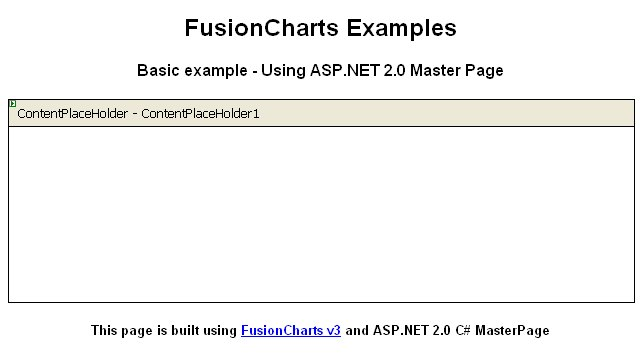
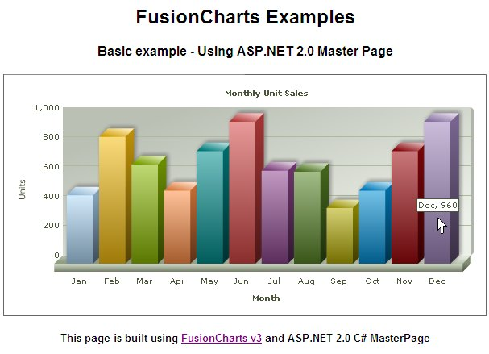

Using FusionCharts with ASP.NET 2.0 (C#)> Master Page Sample |
FusionCharts can effectively be used with C# (ASP.NET) Master Pages to plot dynamic data-driven charts. In this example, we'll show a basic sample to help you get started. In this example we'll do the following:
Before you go further with this page, we recommend you to please see the previous section "Basic Examples" as we start off from concepts explained in that page. |
| All code discussed here is present in Download Package > Code > C# > MasterPage_Example folder. |
| Creating a Master Page |
| We have created a simple master page with a header and a footer and a content place holder. The code of the master page (MasterPage.master) is as shown below: |
| <%@ Master Language="C#" %> <html> <head runat="server"> <style type="text/css"> <!-- body { font-family: Arial, Helvetica, sans-serif; font-size: 12px; } .text{ font-family: Arial, Helvetica, sans-serif; font-size: 12px; } --> </style> </head> <body> <center> <form id='form2' name='form1' method='post' runat="server"> <h2>FusionCharts Examples</h2> <h4>Basic example - Using ASP.NET 2.0 Master Page</h4> <asp:ContentPlaceHolder ID="ContentPlaceHolder1" runat="server"> </asp:ContentPlaceHolder> <p /> <h5> This page is built using <a href="http://www.fusioncharts.com" target="_blank"> FusionCharts v3</a> and ASP.NET 2.0 C# MasterPage </h5> </form> </center> </body> </html> |
|
|  |
| Creating a content page |
| Now, lets create a content page to apply this master page and add a chart to it. Our content page ( Default.aspx) will be like this : |
| <%@ Page Language="C#" MasterPageFile="~/MasterPage.master" CodeFile="Default.aspx.cs" Inherits="_Default" Title="FusionCharts Example - Using ASP.NET 2.0 Master Page" %> <asp:Content ID="Content1" ContentPlaceHolderID="ContentPlaceHolder1" Runat="Server"> <script language="javascript" type="text/javascript" src="../FusionCharts/FusionCharts.js"></script> <% //Included FusionCharts.js to embed FusionCharts easily in web pages //The following code will generate a chart from code behind file Default.aspx.cs %> <%=GetMonthlySalesChartHtml() %> </asp:Content> |
|
| Let's see how GetMonthlySalesChartHtml() works: |
using InfoSoftGlobal; public partial class SimpleChart : System.Web.UI.Page |
We've just used the RenderChart() method from InfoSoftGlobal.FusionCharts class to return the HTML code for the chart (using JavaScript embedding). For simplicity we have used a physical Data.xml file to provide chart data using dataURL method. |
| The container page will show up the chart in browser like the screenshot below: |
|  |